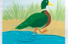
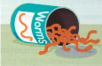

Bài tập
38.1 Viết lại mỗi câu sau bằng một thành ngữ có ý nghĩa trái ngược với các từ được gạch chân.
- There's plenty of room at my house. (Có rất nhiều chỗ ở nhà tôi.)
- I'll let you know by email. (Tôi sẽ báo cho bạn biết qua email.)
- Peter has not told anybody the secret news. (Peter chưa kể với ai về tin tức bí mật đó.)
- The economy is getting better and better. (Nền kinh tế đang ngày càng tốt lên.)
- The office staff were working very calmly and efficiently. (Các nhân viên văn phòng đã làm việc rất bình tĩnh và hiệu quả.)
38.2 Những bức tranh này làm bạn liên tưởng đến những thành ngữ nào?


38.3 Ghép mỗi thành ngữ từ bài tập 38.2 với một trong những câu sau.
38.4 Trả lời những câu hỏi sau.
- If you tell someone a secret, what do you let the cat out of? (Nếu bạn tiết lộ bí mật cho ai đó, bạn sẽ thả con mèo ra khỏi cái gì?)
- What can you put out in order to test whether people are interested in an idea? (Bạn có thể đưa cái gì ra để thăm dò xem mọi người có hứng thú với một ý tưởng hay không?)
- What kind of law do wild animals obey? (Động vật hoang dã tuân theo loại luật nào?)
38.5 Sử dụng từ điển để tìm các từ còn thiếu trong các thành ngữ về động vật này nếu bạn chưa biết chúng. Nếu bạn nghĩ mình đã biết các thành ngữ này, hãy viết câu trả lời của bạn và sau đó kiểm tra lại trong từ điển. Hãy ghi chú lại ý nghĩa của các thành ngữ vào sổ tay từ vựng của bạn.
- take the bull by the
- kill two birds with one
- at a snail's
- like a bear with a sore
- a 's breakfast
38.6 Sử dụng năm thành ngữ từ bài tập 38.5 để viết lại các phần được gạch chân trong đoạn văn này.
Tôi đã cố gắng hoàn thành bài luận cho lớp tiếng Anh của mình vào cuối tuần, nhưng mọi thứ dường như diễn ra very slowly (rất chậm chạp) và tôi không có nhiều động lực. Vì vậy, tôi quyết định face the situation and act positively (đối mặt với tình hình và hành động tích cực). Tôi đã thức đến sau nửa đêm mỗi ngày trong suốt bốn ngày và làm bài luận của mình. Tôi mệt mỏi vào buổi sáng, và đi lại với cảm giác very bad-tempered and irritable (rất cáu kỉnh và dễ nổi nóng) cả ngày, nhưng cuối cùng tôi đã xoay sở để do two useful things in one go (làm được hai việc hữu ích cùng một lúc): Tôi đã hoàn thành bài luận và đọc một số cuốn sách quan trọng lẽ ra tôi phải đọc từ nhiều tuần trước. Bài luận gần đây nhất của tôi a bit of a mess (hơi lộn xộn một chút), nhưng tôi hy vọng bài luận này sẽ đạt điểm tốt hơn.
Hãy nghĩ về hai loài động vật có các thành ngữ liên quan đến chúng trong ngôn ngữ của bạn. Sau đó sử dụng từ điển để xem có thành ngữ nào liên quan đến những loài động vật này trong tiếng Anh hay không.